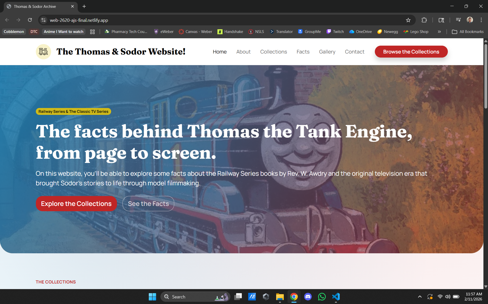
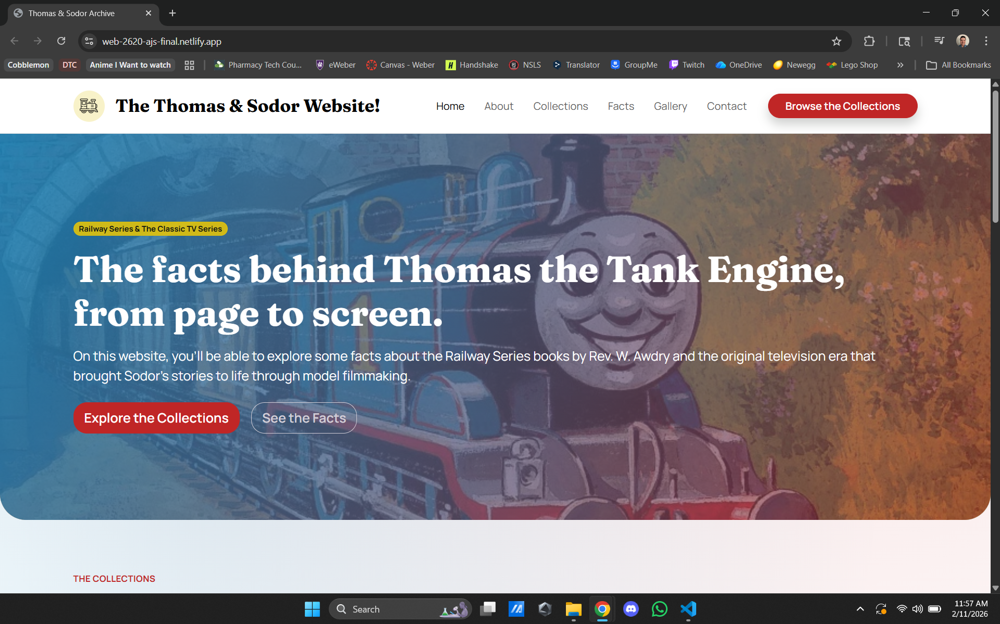

Thomas the Tank Engine Site
Final website project focused on building a themed, responsive site experience.
Project Snapshot
Course/Context: WEB 2620
Role: Front-end developer
Tools: HTML, SCSS, JavaScript
Live Demo: web-2620-ajs-final.netlify.app
GitHub: github.com/WSU-WEB2620-AA/web-2620-final-AJSpicknall.git
Challenge
I wanted users to be given an opportunity to learn and understand more of the history of Thomas the Tank Engine.
Solution
I then built a responsive layout with sample pictures, basic facts, and quick links for further information.
Result
The users were able to learn more about Thomas the Tank Engine and gain a greater appreciation for his history.
Project Gallery
 
